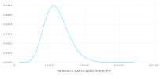
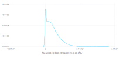

Parametric bootstrap for linear mixed-effects models
Julia is well-suited to implementing bootstrapping and other simulation-based methods for statistical models. The bootstrap! function in the MixedModels package provides an efficient parametric bootstrap for linear mixed-effects models, assuming that the results of interest from each simulated response vector can be incorporated into a vector of floating-point values.
The parametric bootstrap
Bootstrapping is a family of procedures for generating sample values of a statistic, allowing for visualization of the distribution of the statistic or for inference from this sample of values.
A _parametric bootstrap_ is used with a parametric model, m, that has been fitted to data. The procedure is to simulate n response vectors from m using the estimated parameter values and refit m to these responses in turn, accumulating the statistics of interest at each iteration.
The parameters of a linear mixed-effects model as fit by the lmm function are the fixed-effects parameters, β, the standard deviation, σ, of the per-observation noise, and the covariance parameter, θ, that defines the variance-covariance matrices of the random effects.
For example, a simple linear mixed-effects model for the Dyestuff data in the lme4 package for R is fit by
julia> using DataFrames, Gadfly, MixedModels, RData
julia> ds = names!(dat[:Dyestuff], [:Batch, :Yield])
30×2 DataFrames.DataFrame
│ Row │ Batch │ Yield │
├─────┼───────┼────────┤
│ 1 │ "A" │ 1545.0 │
│ 2 │ "A" │ 1440.0 │
│ 3 │ "A" │ 1440.0 │
│ 4 │ "A" │ 1520.0 │
│ 5 │ "A" │ 1580.0 │
│ 6 │ "B" │ 1540.0 │
│ 7 │ "B" │ 1555.0 │
│ 8 │ "B" │ 1490.0 │
⋮
│ 22 │ "E" │ 1630.0 │
│ 23 │ "E" │ 1515.0 │
│ 24 │ "E" │ 1635.0 │
│ 25 │ "E" │ 1625.0 │
│ 26 │ "F" │ 1520.0 │
│ 27 │ "F" │ 1455.0 │
│ 28 │ "F" │ 1450.0 │
│ 29 │ "F" │ 1480.0 │
│ 30 │ "F" │ 1445.0 │
julia> m1 = fit!(lmm(@formula(Yield ~ 1 + (1 | Batch)), ds))
Linear mixed model fit by maximum likelihood
Formula: Yield ~ 1 + (1 | Batch)
logLik -2 logLik AIC BIC
-163.66353 327.32706 333.32706 337.53065
Variance components:
Column Variance Std.Dev.
Batch (Intercept) 1388.3333 37.260345
Residual 2451.2500 49.510100
Number of obs: 30; levels of grouping factors: 6
Fixed-effects parameters:
Estimate Std.Error z value P(>|z|)
(Intercept) 1527.5 17.6946 86.326 <1e-99
Using the bootstrap! function
This quick explanation is provided for those who only wish to use the bootstrap! method and do not need detailed explanations of how it works. The three arguments to bootstrap! are the matrix that will be overwritten with the results, the model to bootstrap, and a function that overwrites a vector with the results of interest from the model.
Suppose the objective is to obtain 100,000 parametric bootstrap samples of the estimates of the "variance components", σ² and σ₁², in this model. In many implementations of mixed-effects models the estimate of σ₁², the variance of the scalar random effects, is reported along with a standard error, as if the estimator could be assumed to have a Gaussian distribution. Is this a reasonable assumption?
A suitable function to save the results is
julia> function saveresults!(v, m)
v[1] = varest(m)
v[2] = abs2(getθ(m)[1]) * v[1]
end
saveresults! (generic function with 1 method)
The varest extractor function returns the estimate of σ². As seen above, the estimate of the σ₁ is the product of Θ and the estimate of σ. The expression abs2(getΘ(m)[1]) evaluates to Θ². The [1] is necessary because the value returned by getθ is a vector and a scalar is needed here.
As with any simulation-based method, it is advisable to set the random number seed before calling bootstrap! for reproducibility.
julia> srand(1234321);
julia> results = bootstrap!(zeros(2, 100000), m1, saveresults!);
The results for each bootstrap replication are stored in the columns of the matrix passed in as the first argument. A density plot of the first row using the Gadfly package is created as
plot(x = view(results, 1, :), Geom.density(), Guide.xlabel("Parametric bootstrap estimates of σ²"))

The distribution of the bootstrap samples of σ² is a bit skewed but not terribly so. However, the distribution of the bootstrap samples of the estimate of σ₁² is highly skewed and has a spike at zero.